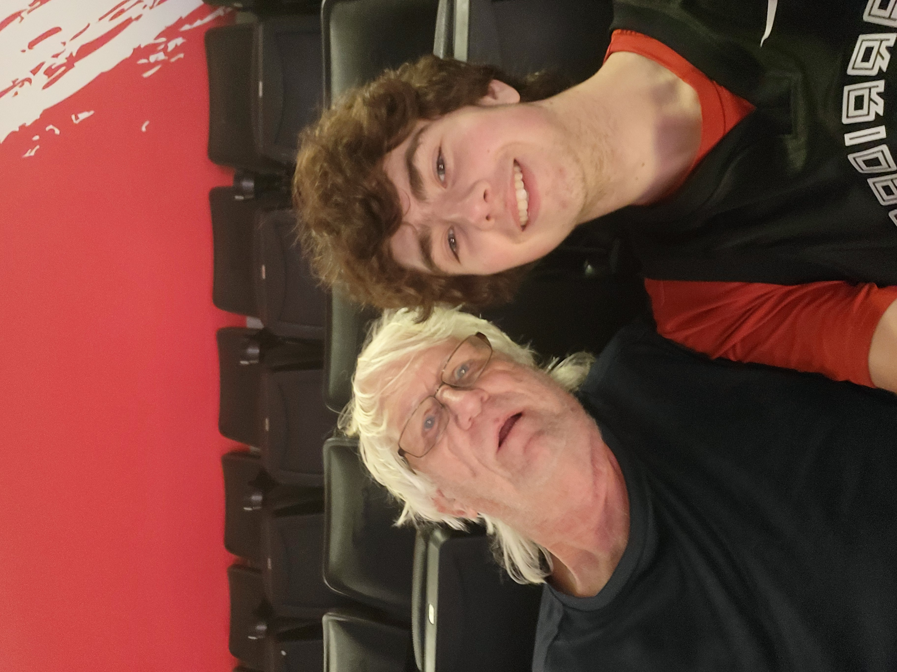
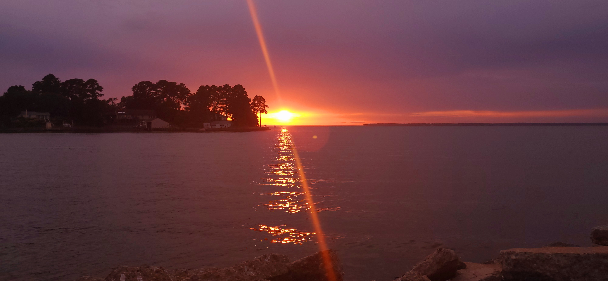

Purpose of This Page
The purpose of this webpage is to give a brief history about the creation of Valentines Day. It's also to express my love and gratitude to my Grandpa. He has taken care of me since I was six-months old. He has been there every step of the way and this little webpage is my way of saying Thank You.

Photo from Warriors and Wizards game, Warriors won 123-112
Happy Valentines Day and Thank You
This entire webpage is dedicated to you. The point of this project was to make a webpage for a loved one, after presenting it in class it was then going to be sent to that loved one. If you are reading this than you received the email with the link. I really just want to say Happy Valentines day and that I love you. Thank you for always being there, thank you for always having my back. Words can't describe how thankful I am to have you. 
Oh and there's one more thing. Although, I would be careful when clicking this link. You'll understand why when you click it.
CLICK AT OWN RISK!